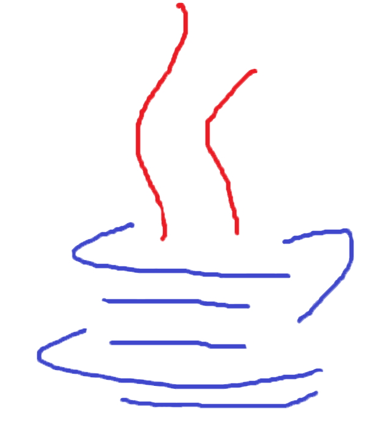
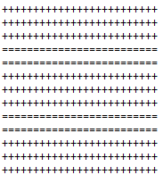
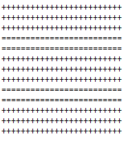
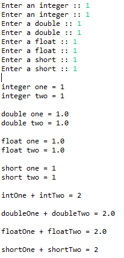
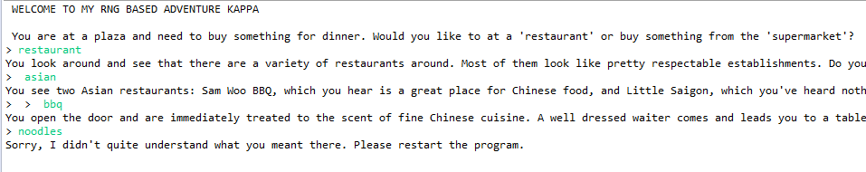

Java Content

Unit 0
Lab 0a1

Unit 0
Lab 0a1
In this lab, you need to type lines so that it resembles a picture. You use equal signs and pluses to create a pattern of three lines of pluses, two lines of equal signs, three lines of pluses, two lines of equal signs, and three lines of pluses.
Concepts Learned
- System.out.println(""); - This makes a next line of text with whatever you want inside the quotations.
Lab 0a1
In this lab, you need to create questions that will have the user input a number. This number will be stored as a integer, float, double, or short. These values will then be added or subtracted from each other.
Concepts Learned
- intOne = keyboard.nextInt() - This function makes it so that the next number that the user types in will be stored as an integer that can be called upon later. Floats, doubles and shorts follow the same template.
- intTotal = intOne + intTwo: - This creates a variable that is the two integers added together.
Unit 1
Text Based Adventure
In this lab, you create a text based adventure based on a story that you created. I created a story in which you decide what kind of food to buy when you are at a town square. You display a few sentences that summarize what the situation is and then you give the user a choice between where to go or what to eat. They type in that choice and then you display a few sentences. The cycle repeats until the player reaches one of the endings. If the user types in an invalid string, the program will ask the user to restart.
Concepts Learned
- if/else - Even though I used if/else in previous languages, this was the first time I used it in Java. This command is used to discern which choice the user typed in.